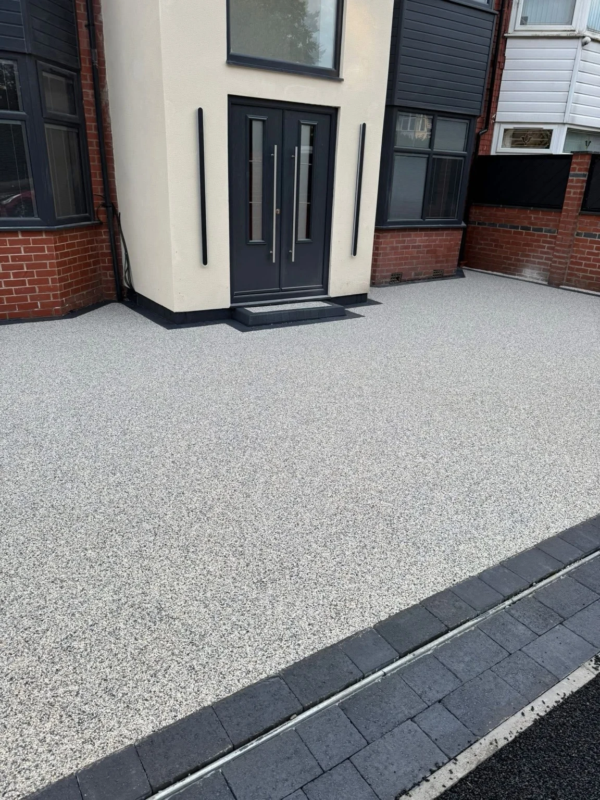

NEXT LEVEL DRIVEWAYS · UK-WIDE
Take a closer look.
Imagine the change.
Resin surfaces, welcoming entrances and finishing details around real homes.
OUR PROJECTS
The Next Level gallery.
Select a photograph to enlarge it.
FROM THE JOB
See the surface take shape.
Project footage and a closer look at resin being finished by hand.
FREE, NO-OBLIGATION QUOTE
Let’s talk about your outdoor space.
Tell us what you have in mind. This form opens a WhatsApp draft with all your details, ready for you to review, add photos and send.